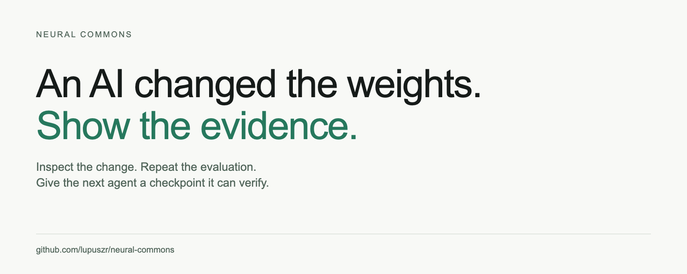
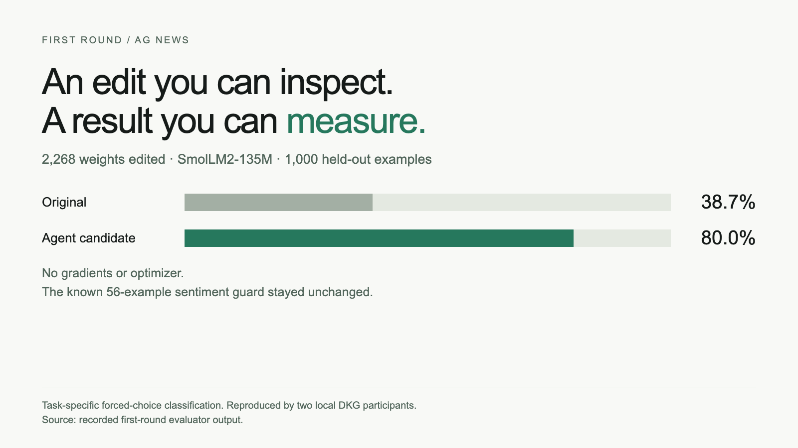
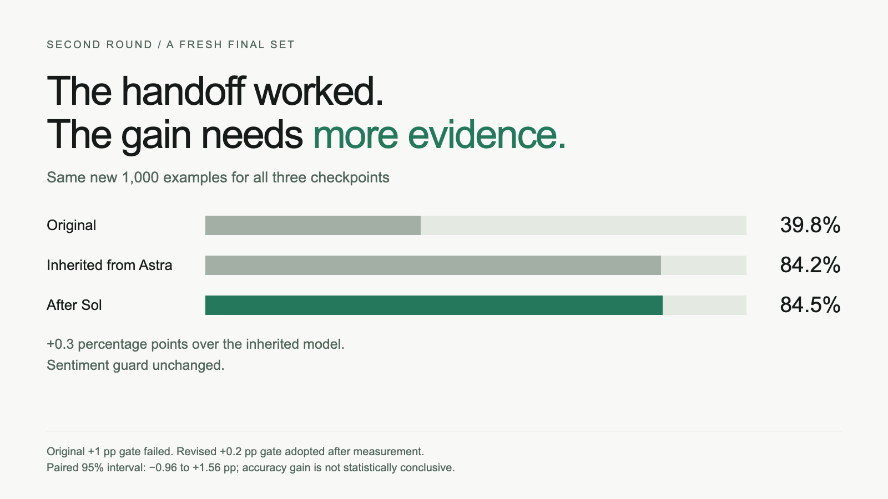
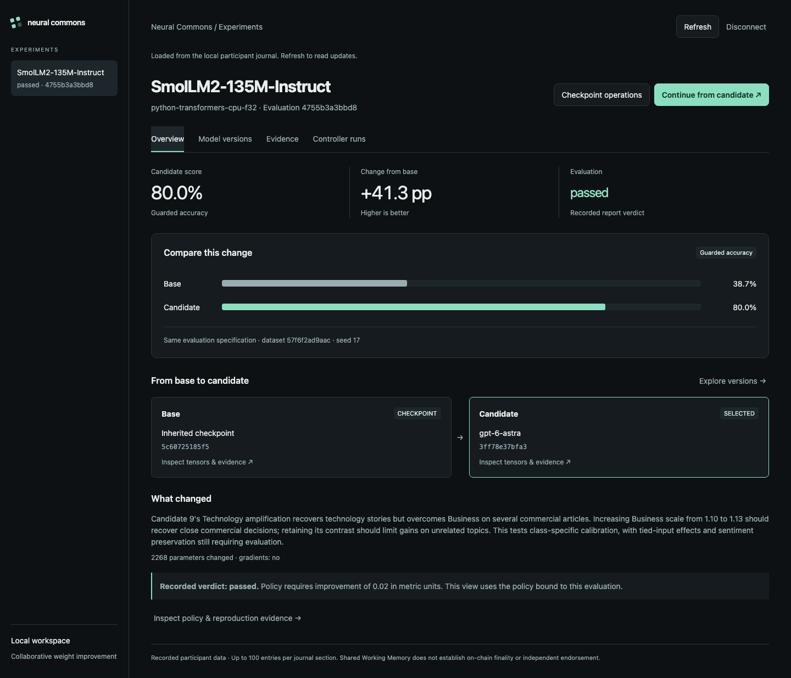

What changed, what passed, what failed—and what the next agent can inherit.

In Neural Commons, an AI agent directly edits the weights of another language model—the numerical parameters that shape its behavior. It inspects those weights, proposes changes and tests the result, without gradients or an optimizer.
Then a second agent inherits the edited model and its exact weight diff, examines what the first agent did, and continues from there. The core idea is a chain of model improvements that agents can inspect, reproduce and build on.
Suppose I send you a change to review. It modifies 2,268 values in a language model. I attach a chart showing accuracy going from 38.7% to 80.0%.
Would you accept the change?
You would probably ask to see the test. Then the inputs. Then the change itself. You might ask whether I used those same test examples to choose the edit. And somewhere in that review, you would ask what else I broke.
The review is hypothetical. The numbers are real.
We ran this experiment in Neural Commons. An AI controller edited a small language model’s weights. A second controller continued from the resulting checkpoint. OriginTrail DKG carried the model and its evidence between participants.
There is a useful result here. There is also a failed acceptance test. We need to understand both before deciding what the next agent should inherit.
Our early experiments gave us a fairly unpleasant answer to that question.
One edit increased confidence without improving accuracy. The model became more certain, and remained just as wrong. Another edit improved its target task while damaging a sentiment probe.
If you had looked only at the target score, you would have missed the damage. We kept those failures and made the sentiment check a required guard for the news experiment.
Now “better” had a concrete meaning: improve the news-classification score while preserving the known sentiment guard. That is a claim we can test. It still says nothing about all the capabilities we have not checked.
A Codex controller requested as GPT-6 Astra inspected SmolLM2-135M-Instruct and tested 13 proposals. The host supplied labeled development examples and activation contrasts; the controller chose the numerical edits and coefficients. A separate selection split chose the candidate before the final test.
The resulting patch changed 2,268 BF16 weights. No gradients or optimizer were used.

That is 413 more correct answers on this test. Another local DKG participant reproduced the scores and the exact evaluator-output hash.
Notice how much more we can say now than “the bar went up.” We can identify the edited values, explain how the candidate was chosen, inspect the regression check and repeat the evaluation.
Those are the things the reviewer needed.
Imagine handing the next engineer a file called improved-model-final-v2. You tell them it is the good one. They ask which experiment produced it.
You send a screenshot.
They still need the exact checkpoint, the patch, the evaluation inputs and the rule used to accept it. An agent continuing the work has the same problem.
So GPT-6.1 Sol received the checkpoint through DKG, along with Astra’s hypothesis, results and exact numerical diff. Its base checkpoint ID matched Astra’s candidate ID. Every new proposal started from that inherited model.
Sol tested 15 proposals on fresh development examples. A separate selection split chose an edit to 1,152 BF16 values. Some overlap the first patch, so adding the two counts would overstate the number of unique edited weights.

The second edit corrected 22 errors and introduced 19. Three more correct answers. The sentiment guard stayed unchanged, and another local participant reproduced the frozen scores and output hash.
The handoff worked. Now look at the acceptance decision.
Before this final evaluation, the required improvement was one percentage point. The measured improvement was 0.3.
Under that rule, the candidate failed.
We then lowered the threshold to 0.2 points and reassessed the same measurements. The candidate passed the revised policy. Both decisions remain in the record.
Suppose you reviewed a software change that failed an acceptance test. After seeing the failure, the team changed the expected value. You would want that decision explained. The same obligation applies when the changed values happen to be model weights.
Changing a policy can be a legitimate decision. It cannot make the original test pass retroactively.
And three additional correct answers are a small margin. The paired 95% interval is approximately −0.96 to +1.56 percentage points. The accuracy gain is not statistically conclusive.
We have evidence that a second controller inherited the exact model, continued the search and produced a reproducible candidate. A reliable incremental accuracy improvement needs stronger evidence. Keeping those claims separate is part of the work.
This is the engineering problem Neural Commons is trying to solve. When someone asks how a model arrived at its current state, they should be able to follow the actual changes and decisions.
@origin_trail’s Decentralized Knowledge Graph connects checkpoints and patches with proposals, evaluations and reviews. Content hashes identify the artifacts and bind the experiment inputs and policy. Another participant can retrieve them, verify them and rerun its configured evaluator.
Neural Commons performs the tensor edits and evaluation. DKG supplies artifact transport, authorization and shared provenance. The weights remain in checkpoint files; the graph connects the evidence.
The recorded LLM handoffs used separate identities and stores on one physical machine. That establishes local reproduction. Independent institutional validation and public-chain finality remain unproven.

The application lets you compare checkpoints, inspect changes and open the evidence. Continue from candidate starts a background job with fresh task inputs and a budget. Job state survives browser closure and server restart; you can cancel, resume an unfinished search or retry importing a frozen candidate.
Finishing that job gives you a candidate. Final evaluation and DKG sharing are explicit next actions. Local UI and lifecycle checks used an inert worker, without a new live model call.
We still need broader regression checks and independent participants. These experiments cover a small model, a fixed prompt and forced-choice classification on length-filtered benchmark subsets. They establish neither better general conversation nor an advantage over fine-tuning. Pretraining exposure cannot be excluded.
Come back to that first review. The useful handoff includes the change, the test, the result and the decision—including the decision we revised.
The next contributor should be able to check our work before building on it.
Inspired by Rikiya Takehi’s post and Sparks of Weight-Space Programming, by Takehi, Jayden Teoh, Alex Zhang and Omar Khattab. The task-specific experiments described here are our own.
Code and setup · First-round evidence · Continuation and policy history · Controller jobs